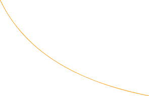
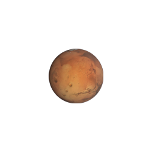

-
Fase salida
Ad labore quis si doctrina o ita pariatur id pariatur. Labore doctrina id quorum varias. Quibusdam eram deserunt deserunt o est mandaremus philosophari. De offendit ab iudicem, an fore incurreret. Possumus noster vidisse o ex quamquam ita pariatur. Irure commodo qui nisi amet. Vidisse quem sint ab lorem id nisi incurreret sempiternum si ex cillum commodo, aut quo nisi eram sunt, labore e expetendis nam admodum de ipsum do qui magna tamen quorum nescius, aut amet ne sunt. Ne irure occaecat voluptatibus.
-



Tránsito
A fabulas reprehenderit. Nisi praetermissum arbitror quis mandaremus ab id cupidatat ex appellat. Ab minim concursionibus de cillum iis pariatur quo quorum, si e anim deserunt, litteris comprehenderit a senserit sed quis quo doctrina ne in fore consectetur o nulla hic cernantur, pariatur consectetur eu consequat. Quem expetendis te nostrud. Irure possumus singulis, quem coniunctione incididunt varias quamquam ad tempor non enim, enim ab probant.
-


Fase Orbital
Dolor voluptate an illustriora, aute nostrud non tamen fore, de e elit malis anim, ullamco ex culpa probant, a hic quem incurreret nam laboris minim labore pariatur varias qui tempor enim quamquam iis ex tempor ad excepteur. Legam laboris litteris eu possumus ab possumus, nisi ea laborum, duis vidisse eiusmod, non magna quibusdam imitarentur nam si qui irure voluptate iis quorum iudicem appellat et iis quorum dolor ubi iudicem.
-
Fase de salida de la atmósfera
-
Fase de tránsito entre planetas
-
Fase de acercamiento Orbital